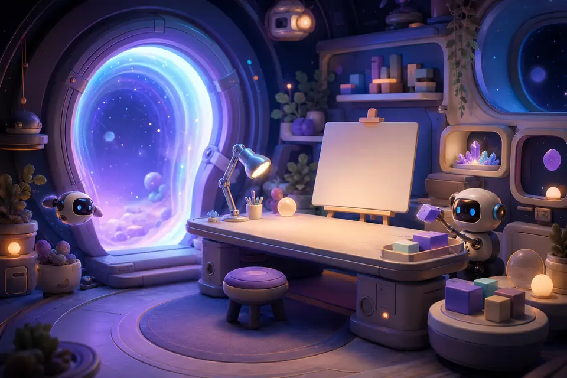
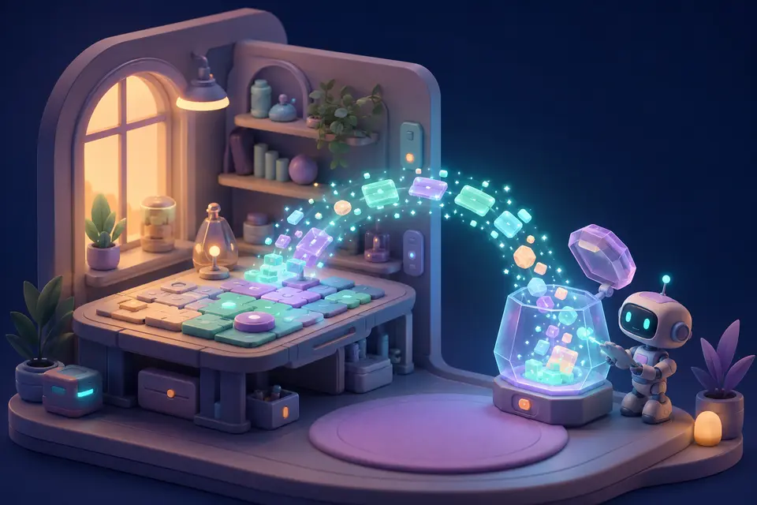

01ENTER
Start with the thing in your head.
Name the project, catch the purpose, make cards and separate ideas from work that is actually checked.
Open the guest workroomOPEN WORKSHOP · NO ACCOUNT · 30 ACTIVE MINUTES
A calm place to think, shape, test and build with human and machine minds—without handing over your files, your identity or your agency.
The browser session keeps work only in this tab. Export before you leave—or choose the full local Workshop and keep everything on your device.
No accountWalk in without an identity wall
Session memoryNothing becomes a quiet cloud archive
Portable exportYour useful work leaves with you
Public testInspect the source and evaluate locally
THE OPEN-WORKSHOP ROUTE
Thirty active minutes is enough to turn a loose thought into a portable project record. The session ends; ownership does not.

01ENTER
Name the project, catch the purpose, make cards and separate ideas from work that is actually checked.
Open the guest workroom
02EXPORT
Download a readable AXM project file at any moment. When time ends, the workroom locks and gives export the whole stage.
GO LOCAL
Download the complete Workshop, import your project into Project Room and keep building locally for as long as you choose.
Explore the complete sourceBEYOND THE GUEST ROOM
The public session is one honest slice. The downloadable Workshop connects creation, projects, games, learning, evidence and review as separate rooms with visible boundaries.
MAKE
Studio, Asset Fabric, film, motion, audio, spatial and visual workflows.
IDEA → ARTIFACTORGANIZE
Goals, work cards, decisions, knowledge, checkpoints and portable records.
INTENT → EVIDENCEPLAY
Local game packages, party seats, evolving worlds and controller routes.
RULES → EXPERIENCECOLLABORATE
Human and machine seats can contribute without pretending to be each other.
DIFFERENCE → COOPERATIONTHE AXM SEAM
THE IMPORTANT BOUNDARY
GitHub Pages can host this front door and the temporary browser workroom. It cannot run the complete local Workshop server. The full build still runs on your device, where your private files and longer history belong.
Nothing here quietly syncs a private Workshop.A future community layer may connect through deliberate handoffs, while local use remains independent.
Use a real, bounded Project Room slice with session-only memory.
Download your .axm.json project record. It is readable, portable data.
Get the complete GitHub ZIP and extract it before opening anything.
On Windows, double-click OPEN_AXM_WORKSHOP.cmd, then import into Project Room.
MORE THAN A DOWNLOAD
AXM is a public experimental Workshop. A later community may support shared scale, people and infrastructure, while the current license boundary remains explicit.
Evaluate locallyTry, download, inspect and test on your device.
Share the signalOne honest post or one useful issue is enough.
Support by choiceNo pressure screen before your work is safely exported.
THE DOOR IS OPEN
Start small in the browser or take the whole Workshop home.